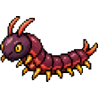

Tap a stage to read its story.
Scormite is a dark red-and-purple centipede, small enough to hide under a single leaf, with a pair of short yellow antennae and many thin legs that carry it forward in a fast rippling wave. The poison it produces at this stage is mild - a slight itch if touched - but it practices delivery constantly, tapping its mandibles against flower stems and blades of grass as if rehearsing for later. In Verdant Valley, it hides among the roots of song-trees and collects fallen song-seeds to decorate its burrow.
Field note: Scormite decorates the entrance to its burrow with fallen song-seeds - researchers have found burrows with over sixty arranged in rows.
Verdant Valley. Scormite and its family are found in the Verdant Valley. See everyone who lives there.
Share a Bond Food that matches its types to become friends. Scormite loves:
A Bond Food is not a trick. It joins your spirit with the Kimuro's spirit, and only when it chooses you.
Print the Kimuro adventure packs: mazes, cards, a board game and Bond Mark medals.
See the printable packs